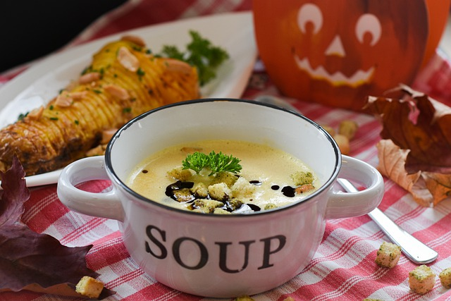

Butternut Squash Soup

Delicious and very easy to make. You can use 3 to 4 cups of chicken broth instead of the water and bouillon cubes. Also works well with half as much cream cheese if you don't want it too rich.
Ingredients
- 6 tablespoons chopped onion
- 4 tablespoons margarine
- 6 cups peeled and cubed butternut squash
- 3 cups water
- 4 cubes chicken bouillon
- 1/2 teaspoon dried marjoram
- 1/4 teaspoon ground cayenne pepper
- 2 (8 ounce) packages cream cheese
Directions
- In a large saucepan, saute onions in margarine until tender. Add squash, water, bouillon, marjoram, black pepper and cayenne pepper. Bring to boil; cook 20 minutes, or until squash is tender.
- Puree squash and cream cheese in a blender or food processor in batches until smooth. Return to saucepan, and heat through. Do not allow to boil.